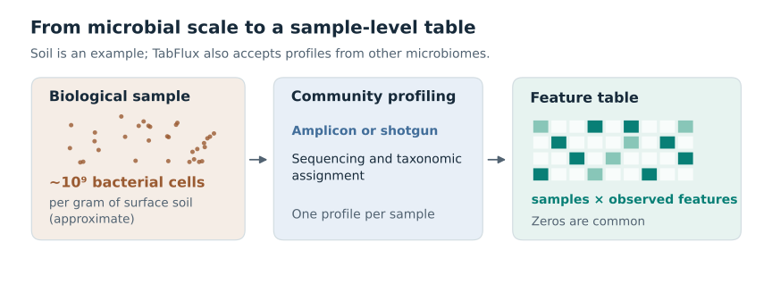
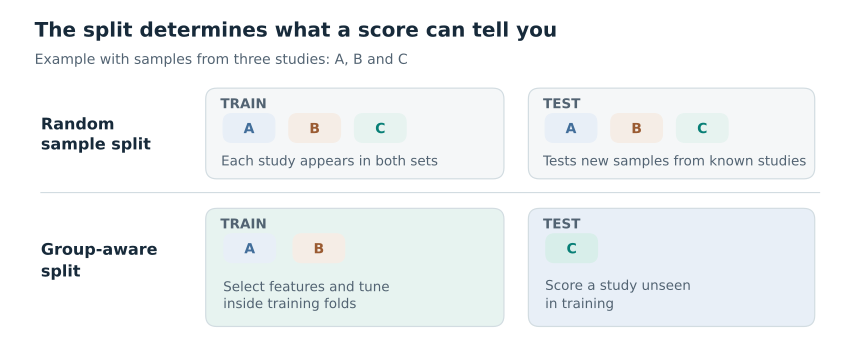
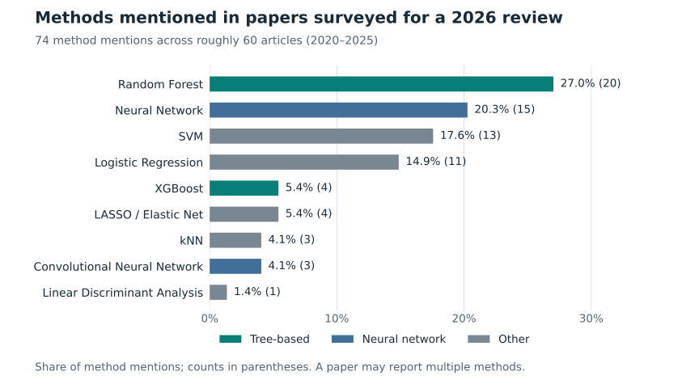

Why TabFlux¶
From a microbial community to a feature table¶
A gram of surface soil can contain on the order of a billion bacterial cells [1]. A classifier sees none of those cells or their genomes. Amplicon sequencing and shotgun taxonomic profiling reduce each sample to a vector of observed microbial features, such as amplicon sequence variants (ASVs) or species-level genome bins (SGBs). Across samples, the resulting table is often sparse and has many features relative to its number of samples. Read counts depend on sequencing depth; normalised abundances are compositional, and a zero can mean absence or non-detection [2,3].

Figure 1. Profiling compresses a complex community into one feature vector per sample.
The evaluation problem¶
Machine learning has long been used to analyse human microbiome profiles, including associations with disease [4]. It is also applied to plant-associated and agricultural microbiomes [3,7], and public resources such as cFMD provide profiles of food metagenomes [5]. In each setting, samples may come from different studies, sites or sequencing batches. A random split can put samples from the same group in both training and test sets. If group-specific patterns correlate with the target, the resulting score may overstate performance on a new group [6].

Figure 2. Schematic comparison of two evaluation questions. For transfer to a new study or site, the test set must contain whole groups unseen during training. Feature selection and tuning belong inside the training portion of each outer split. Grouping alone cannot remove biological or technical confounding.
While preparing a review of machine learning for designing low-risk microbial consortia pesticides [7], its authors tallied the methods mentioned in roughly 60 agricultural and environmental microbiome papers published in 2020–2025, and recorded 74 method mentions. The random forest was the most frequent individual method (20/74 mentions); random forest and XGBoost together accounted for 24/74. Neural networks, including convolutional networks, accounted for 18/74.

Figure 3. Methods mentioned in the papers surveyed for Garcés-Ruiz et al. [7].
Where TabPFN fits¶
TabPFN is a different type of learner. The version described by Hollmann and colleagues in
Nature in 2025 was trained on synthetic tabular prediction tasks and uses a transformer
to condition on labelled examples at inference [8]. Prior Labs released TabPFN-3.5 in
2026 [9]; its model card states that it is trained purely on synthetic tabular tasks and
predicts in a forward pass [10]. TabFlux averages eight such passes per prediction, the
number stored in the checkpoint, and a nested evaluation still calls the learner for
every inner and outer fold. TabFlux uses the TabPFN-3.5 checkpoint by default; v2.5 is
selectable through runtime.tabpfn.model_version. Its performance on microbial profiles
has to be established on the same held-out groups, and with the same metrics, as the
other learners in a run.
What the workflow does¶
TabFlux is an R/mlr3 workflow for classification from existing microbial community tables. It reads a feature table (read counts, or relative abundances such as MetaPhlAn profiles), a taxonomy table and sample metadata from amplicon or shotgun profiling. A YAML configuration names the outcome and, when applicable, the study, site or batch to hold together during evaluation. The workflow aggregates taxa to a chosen rank, normalises for sequencing depth and selects features. It offers seven learners: TabPFN, random forest, XGBoost, penalised regression, k-nearest neighbours, a support vector machine and a multilayer perceptron; the multilayer perceptron cannot share a run with TabPFN.
Evaluation is nested by default: feature selection and hyperparameter tuning are repeated on the training portion of each outer fold. When the configuration names a grouping column, as the template and the cFMD examples do, each outer fold holds out whole groups; without one, the folds are random and stratified by class. An independent external test set can also be supplied.
The report gives accuracy, balanced accuracy and log-loss, with ROC-AUC, PR-AUC and
related measures for binary targets, plus recall for each class, predictions and the
selected features. By default the predicted class is the one with the largest probability
divided by that class's frequency in the training samples, the rule that favours balanced
accuracy; log-loss uses the unadjusted probabilities (see
evaluation design). SHAP values, per
taxon and per class, are computed for the learner with the highest cross-validated
balanced accuracy, refitted on all training samples, on a subset of those samples; the
report summarises them and metrics/shap_values.csv holds the per-sample values.
A worked example uses food metagenome profiles from the public cFMD resource [5]. TabFlux starts from profiles rather than raw reads. For user-supplied data, a run needs one configuration file and three input tables, plus three more for an optional external test set; the Quarto workflow produces an HTML report with machine-readable results.
Model licence
TabFlux (Apache-2.0), the tabpfn Python package it calls (Apache-2.0, Prior Labs)
and the TabPFN-3.5 weights are licensed separately. The weights are downloaded from
Prior Labs' tabpfn_3_5 repository after a one-time licence acceptance and are
distributed under the TabPFN-3.5 License v1.0 [10]. It allows testing, evaluation and
non-commercial research, including internal benchmarking. It excludes commercial,
production, military, surveillance and biometric uses. The non-commercial condition
covers the model, its derivatives and its outputs (predictions, probabilities,
explanations); commercial or production use needs a separate licence from Prior Labs.
Check the current terms before using this learner in another setting.
References¶
- Delmont TO, et al. (2015). Reconstructing rare soil microbial genomes using in situ enrichments and metagenomics. Frontiers in Microbiology 6:358. https://doi.org/10.3389/fmicb.2015.00358
- Gloor GB, Macklaim JM, Pawlowsky-Glahn V, Egozcue JJ (2017). Microbiome datasets are compositional: and this is not optional. Frontiers in Microbiology 8:2224. https://doi.org/10.3389/fmicb.2017.02224
- Busato S, et al. (2023). Compositionality, sparsity, spurious heterogeneity, and other data-driven challenges for machine learning algorithms within plant microbiome studies. Current Opinion in Plant Biology 71:102326. https://doi.org/10.1016/j.pbi.2022.102326
- Pasolli E, Truong DT, Malik F, Waldron L, Segata N (2016). Machine learning meta-analysis of large metagenomic datasets: tools and biological insights. PLOS Computational Biology 12(7):e1004977. https://doi.org/10.1371/journal.pcbi.1004977
- Carlino N, Blanco-Míguez A, Punčochář M, et al. (2024). Unexplored microbial diversity from 2,500 food metagenomes and links with the human microbiome. Cell 187(20):5775–5795. https://doi.org/10.1016/j.cell.2024.07.039
- Wirbel J, et al. (2021). Microbiome meta-analysis and cross-disease comparison enabled by the SIAMCAT machine learning toolbox. Genome Biology 22:93. https://doi.org/10.1186/s13059-021-02306-1
- Garcés-Ruiz M, Guijarro Díaz-Otero B, Antonielli L, et al. (2026). Machine learning for designing low-risk microbial consortia pesticides. Trends in Biotechnology 44(9):2596–2610. https://doi.org/10.1016/j.tibtech.2025.12.027
- Hollmann N, Müller S, Purucker L, Krishnakumar A, Körfer M, Hoo SB, Schirrmeister RT, Hutter F (2025). Accurate predictions on small data with a tabular foundation model. Nature 637:319–326. https://doi.org/10.1038/s41586-024-08328-6
- Jäger B, et al. (2026). TabPFN-3.5: technical report. arXiv:2609.17895. https://arxiv.org/abs/2609.17895
- Prior Labs (2026). TabPFN-3.5 model card https://huggingface.co/Prior-Labs/tabpfn_3_5 and TabPFN-3.5 License v1.0 https://huggingface.co/Prior-Labs/tabpfn_3_5/blob/main/LICENSE, accessed September 2026.